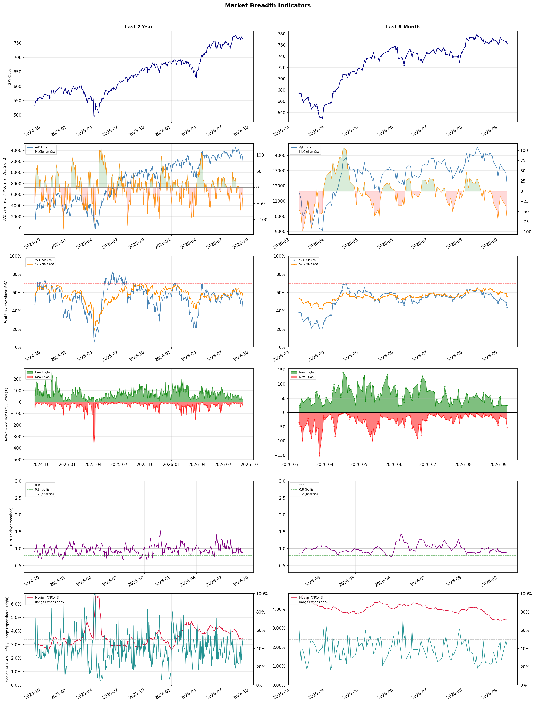

A daily market breadth and sector rotation report for active investors
| Item | Read |
|---|---|
| Regime downgraded | Neutral → Defensive |
| Regime | Defensive |
| Risk posture | Defensive |
| Universe | 1,325 stocks tracked · 25 new 52-week highs · 30 active swing setups |
| Breadth | only 43.8% of tracked stocks are above SMA50, new lows exceed new highs (54 vs 25), McClellan oscillator (breadth momentum) is negative at -70.0 |
| Leadership | Oil & Gas Refining & Marketing, Oil & Gas Integrated, and Gold |
| Weakest groups | Footwear & Accessories, Solar, and Aerospace & Defense |
Use this report to prioritize research and chart review; validate entries, stops, liquidity, earnings, and risk before acting.
| Item | Read |
|---|---|
| Primary read | Defensive regime with Defensive risk posture. |
| Research queue | UGP, DINO, MPC, VLO, PSX |
| Leadership focus | Oil & Gas Refining & Marketing, Oil & Gas Integrated, and Gold |
| Caution list | Footwear & Accessories, Solar, and Aerospace & Defense |
| Review prompt | Check extension risk, chart location, fundamentals, valuation, and earnings before using any research row. |
| Item | Read |
|---|---|
| Primary read | 4 active risk warnings; use screen output as watchlist input only. |
| Bullish screens | VLO, CVE, CVX, EQNR, APA |
| Bearish screens | RARE, AON, GRAB, MPT, TU |
| Alerts / levels | Automated trigger, stop, ATR, liquidity, reward/risk, and event-risk levels are pending future enrichment. |
| Review prompt | Open the linked chart, define trigger and invalidation, then check liquidity and event risk independently. |
Risk Posture: Defensive — screen backdrop favors caution; require independent risk review before new exposure
Metric context: McClellan below -50 = elevated selling pressure; below -100 = washout territory. Range Expansion = share of stocks with daily range above their 20-day average. Signal Density = share of tracked names appearing in signal screens.
| Breadth Date | % > SMA50 | % > SMA200 | New Highs | New Lows | McClellan | Median Range | Avg Range | Median ATR14 | Range Expansion | Signal Density |
|---|---|---|---|---|---|---|---|---|---|---|
| 2026-09-09 | 43.8% | 55.8% | 25 | 54 | -70.0 | 3.0% | 3.5% | 3.5% | 42.5% | 20.1% |

Regime downgraded: Neutral → Defensive
Prior comparison date: September 8, 2026
| Metric | Prior | Current | Change |
|---|---|---|---|
| Regime | Neutral | Defensive | changed |
| Risk Posture | Cautious | Defensive | changed |
| % > SMA50 | 49.3% | 43.8% | -5.5 pts |
| % > SMA200 | 58.6% | 55.8% | -2.8 pts |
| New Highs | 25 | 25 | +0 |
| New Lows | 22 | 54 | -32 |
Top-10 industries entering: Medical Care Facilities. Top-10 industries leaving: Capital Markets. New multi-signal long setups: APA, CMPS, CVE, CVX, EQNR. New multi-signal short setups: AON, APTV, GRAB, HDB, HE.
| Status | Tickers | Read |
|---|---|---|
| Added | AON, APA, APTV, CMPS, CVE, CVX, EQNR, GRAB | New technical screen matches vs prior report. |
| Removed | AMC, APPS, ASST, AU, AVTX, BAX, BTBT, CLSK | No longer present in today's technical screen matches. |
| Still Active | ANF, CPNG, DELL, RBRK, SYK, UMC | Appeared in both current and prior reports. |
| Promoted | RBRK | Model Screen Score improved by at least 15 points. |
| Downgraded | none | Model Screen Score declined by at least 15 points. |
| Direction | Industry | ETF | Prior Rank | Current Rank | Days | Rank Change |
|---|---|---|---|---|---|---|
| Rose | Gold | GDX | 81 | 3 | 42 | +78 |
| Rose | Agricultural Inputs | N/A | 84 | 7 | 28 | +77 |
| Rose | Oil & Gas E&P | XOP | 72 | 4 | 35 | +68 |
| Rose | Copper | COPX | 71 | 5 | 42 | +66 |
| Rose | Capital Markets | KCE | 75 | 11 | 28 | +64 |
Bull: Gold is experiencing rising relative strength due to a combination of macroeconomic factors, including persistent inflation concerns and geopolitical uncertainties, which drive investors toward safe-haven assets. Recent headlines highlight the ongoing appeal of gold mining stocks, as noted by VanEck’s Casanova, who views current price pullbacks as temporary noise, suggesting that mining stocks remain an attractive investment amid these pressures. Additionally, the discussions around effective trading strategies in gold stocks, as seen in articles like "How We Traded Gold Stocks Without Chasing," indicate a growing interest and confidence in the sector, further bolstering its relative strength against other industries.
Bear: While the bull thesis highlights rising relative strength in gold due to macroeconomic factors, it overlooks the inherent volatility and cyclical nature of gold mining stocks, which can be significantly impacted by rising operational costs, regulatory challenges, and fluctuating commodity prices. Additionally, the recent headlines indicate a growing skepticism within the industry, as evidenced by articles discussing losses in gold stocks and the need for investors to "know thyself," suggesting that many may be overestimating their risk tolerance in a potentially overbought market. This could lead to a sharp correction if macroeconomic conditions shift or if investor sentiment wanes.
Verdict: The gold industry is experiencing a rise in relative strength primarily due to persistent inflation concerns and geopolitical uncertainties that drive demand for safe-haven assets. However, investors should remain cautious of the inherent volatility and potential for sharp corrections in gold mining stocks, especially if operational costs rise or macroeconomic conditions shift, which could lead to a reassessment of risk tolerance in an overbought market.
Sources: Yahoo Finance, Google News
Bull: The Agricultural Inputs sector is experiencing rising relative strength due to increasing momentum and positive sentiment surrounding agriculture stocks, as highlighted by recent articles from The Motley Fool and Univest, which identify attractive investment opportunities for 2026. Additionally, the resilience of companies like KWS Saat and the notable surge in Corteva's stock reflect a growing confidence in the agricultural sector's recovery and profitability, despite some short-term volatility seen in stocks like CF Industries. This bullish outlook is further supported by macro trends such as rising global food demand and advancements in agricultural technology, which are likely to drive sustained growth in the sector.
Bear: While the agricultural inputs sector may currently exhibit rising relative strength and positive sentiment, this optimism could be misleading due to underlying vulnerabilities. The recent drop in CF Industries' stock highlights the potential for volatility and sector-wide selling, which may indicate that the market is overreacting to short-term trends without addressing fundamental challenges such as rising input costs, supply chain disruptions, and geopolitical tensions that could undermine long-term profitability. Additionally, the anticipated growth in global food demand may not translate into proportional gains for agricultural input companies, as competition intensifies and margins tighten.
Verdict: The agricultural inputs sector is experiencing rising strength primarily due to increasing global food demand and advancements in agricultural technology, which are fueling investor optimism and stock performance for key players like Corteva and KWS Saat. However, the key risk lies in the potential for volatility and fundamental challenges, such as rising input costs and supply chain disruptions, which could undermine long-term profitability and lead to sector-wide corrections. Investors should remain cautious and monitor these underlying vulnerabilities while considering opportunities in the sector.
Sources: Google News
Bull: The Oil & Gas E&P sector is experiencing a rise in relative strength primarily due to bullish projections for oil prices, with Goldman Sachs forecasting oil to hit $120, which enhances the profitability outlook for exploration and production companies. Additionally, the recent surge in oil stocks amidst broader market volatility, as highlighted by the Dow's significant drop while oil stocks "catch fire," indicates strong investor sentiment and demand for energy equities, further supported by positive coverage from investment platforms recommending energy stocks and ETFs.
Bear: While bullish projections for oil prices, such as Goldman Sachs' forecast of $120, may seem promising, they often fail to account for the inherent volatility and unpredictability of the oil market, which can be significantly influenced by geopolitical tensions, regulatory changes, and shifts in global demand. Furthermore, the recent surge in oil stocks amidst broader market volatility may reflect a flight to perceived safety rather than genuine growth potential, as investors often gravitate towards energy equities during uncertain times, which could lead to a market correction once broader economic conditions stabilize. Additionally, the rapid rise in oil prices could prompt increased production from non-OPEC countries and alternative energy sources, ultimately dampening long-term price sustainability and profitability for E&P companies.
Verdict: The Oil & Gas E&P sector's rise is fundamentally driven by bullish oil price forecasts, particularly Goldman Sachs' prediction of $120 per barrel, which enhances profitability for exploration and production companies. However, investors should remain cautious of the inherent volatility in the oil market, as geopolitical tensions and potential regulatory changes could lead to significant price fluctuations and impact long-term sustainability. To capitalize on this trend, consider focusing on companies with strong balance sheets and diversified portfolios that can weather market uncertainties.
Sources: Yahoo Finance, Google News
Bull: Copper is experiencing a rise in relative strength primarily due to its critical role in the electrification and AI sectors, as highlighted in recent headlines discussing its importance in the AI trade and the electrification squeeze. The significant gains of major miners like Freeport-McMoRan, which has surged 44% in 2026, indicate strong demand and investor confidence in copper's future, particularly as Wall Street begins to recognize the potential of copper-focused investments, such as the COPX ETF. Additionally, the emphasis on copper stocks as key players in the AI boom further underscores the metal's vital position in emerging technologies and infrastructure development.
Bear: While copper's rising relative strength may seem promising, it is crucial to consider the potential overvaluation driven by speculative enthusiasm rather than fundamental demand. The significant price surge of Freeport-McMoRan and other miners could be a result of short-term market sentiment rather than sustainable growth, especially given the cyclical nature of commodities and the looming risks of a global economic slowdown that could dampen demand for copper in the electrification and AI sectors. Furthermore, the recent headlines may reflect a crowded trade, where investor excitement could lead to a sharp correction if the anticipated demand fails to materialize or if supply chain issues persist.
Verdict: Copper's recent rise is fundamentally driven by its essential role in electrification and AI technologies, which are increasingly prioritized in global infrastructure and investment strategies. However, investors should remain cautious of potential overvaluation and the risk of a global economic slowdown that could undermine demand, suggesting a need for careful monitoring of market conditions and supply chain dynamics before making significant investment decisions.
Sources: Yahoo Finance, Google News
Bull: The Capital Markets sector, as represented by the State Street SPDR S&P Capital Markets ETF (KCE), is experiencing rising relative strength due to a combination of bullish sentiment in the broader market and strong performance from key players like Interactive Brokers, as highlighted in recent headlines. The positive outlook from J.P. Morgan Private Bank, which identifies four stock sectors primed for growth, alongside Morningstar's top Q3 picks, suggests that investor confidence is shifting towards capital markets, driven by resilience in economic conditions and a favorable regulatory environment. This trend is further supported by the overall bullish sentiment on Wall Street, as indicated in the Nasdaq stock outlook, reinforcing the attractiveness of the Capital Markets sector for investors seeking growth.
Bear: While the rising relative strength of the KCE ETF may suggest positive momentum, several underlying headwinds could undermine this bullish outlook. Economic uncertainty, including potential interest rate hikes and inflationary pressures, could dampen trading volumes and investor confidence in the capital markets sector. Additionally, the recent headlines indicating a bullish sentiment may overlook the risks of overvaluation and market corrections, particularly if key players like Interactive Brokers face regulatory challenges or operational setbacks that could impact their performance.
Verdict: The Capital Markets sector is experiencing rising relative strength driven by bullish sentiment, strong performances from key players like Interactive Brokers, and positive outlooks from financial institutions such as J.P. Morgan Private Bank. However, investors should remain cautious of potential headwinds, including economic uncertainty from interest rate hikes and inflation, which could dampen trading volumes and lead to market corrections if key players face regulatory or operational challenges.
Sources: Yahoo Finance, Google News
| Direction | Industry | ETF | Prior Rank | Current Rank | Days | Rank Change |
|---|---|---|---|---|---|---|
| Fell | Airlines | N/A | 4 | 81 | 35 | -77 |
| Fell | Travel Services | N/A | 3 | 75 | 35 | -72 |
| Fell | REIT - Office | XLRE | 4 | 68 | 42 | -64 |
| Fell | Leisure | N/A | 12 | 76 | 35 | -64 |
| Fell | REIT - Retail | N/A | 8 | 65 | 42 | -57 |
Bear: While the bull analyst acknowledges macroeconomic pressures, they underestimate the long-term structural challenges facing the airline industry, including overcapacity and the potential for a recession that could further suppress demand. Additionally, the headlines highlighting "best airline stocks" may be misleading, as they often fail to account for the cyclical nature of the industry, which is prone to sharp downturns, and the ongoing volatility in fuel prices that could erode profitability despite short-term optimism.
Bull: The Airlines industry is experiencing a decline in relative strength primarily due to macroeconomic pressures such as rising fuel costs and labor shortages, which have been highlighted in recent analyses from sources like Zacks and Investor's Business Daily. Additionally, while the headlines suggest optimism with articles focused on the best airline stocks to buy, the competitive landscape among major carriers like United, American, and Delta indicates that market sentiment may be cautious as these companies navigate operational challenges and strive for profitability in a post-pandemic environment.
Verdict: The airline industry's decline is fundamentally driven by rising fuel costs and labor shortages, which are exacerbated by a competitive landscape where major carriers struggle to achieve profitability amidst operational challenges. A key risk from the bear case is the potential for a recession, which could lead to decreased demand and further expose the industry’s structural issues, such as overcapacity and cyclical volatility, undermining any short-term optimism in stock performance. Investors should remain cautious and consider the long-term viability of airline stocks in light of these macroeconomic and industry-specific pressures.
Sources: Google News
Bear: While the bull analyst points to broader market volatility as a temporary factor affecting travel stocks, the reality is that the travel services sector is grappling with fundamental headwinds, including rising inflation, increased fuel costs, and potential recessionary pressures that could dampen consumer discretionary spending. Furthermore, the recent drop in Expedia Group's stock is indicative of a deeper loss of confidence in the sector, suggesting that even the long-term investment opportunities touted may not materialize if economic conditions continue to deteriorate, leading to sustained underperformance in travel stocks.
Bull: The Travel Services sector is experiencing a decline in relative strength primarily due to sector-wide selling pressures, as evidenced by the recent drop in Expedia Group's stock price amid broader market volatility, as highlighted in the AlphaStreet article. Additionally, while there are promising long-term investment opportunities identified for 2026, as noted by Morningstar and The Motley Fool, the current economic conditions may be causing investors to reassess their positions in travel stocks, leading to short-term declines despite the sector's potential for recovery and growth in the coming years.
Verdict: The travel services sector's decline is primarily driven by fundamental headwinds such as rising inflation, increased fuel costs, and potential recessionary pressures that threaten consumer discretionary spending. While there are long-term investment opportunities anticipated for 2026, the key risk lies in the possibility that ongoing economic deterioration could undermine these prospects, leading to sustained underperformance in travel stocks. Investors should closely monitor economic indicators and consumer sentiment to gauge the sector's recovery potential before making significant commitments.
Sources: Google News
Bear: While the bull analyst points to economic uncertainty and interest rate concerns as primary drivers of the Office REIT sector's declining relative strength, it is crucial to consider that the fundamental shift towards remote and hybrid work models has fundamentally altered demand for office space. As companies reassess their real estate needs, the persistent oversupply of office space and rising vacancy rates could lead to further declines in rental income and property values, exacerbating the bearish outlook for the sector. Additionally, the negative performance of specific REITs like Dream Office REIT underscores a broader trend of investor skepticism, suggesting that the challenges facing the office sector are structural rather than merely cyclical.
Bull: The falling relative strength of the Office REIT sector can be attributed to heightened concerns over interest rates and economic conditions, as highlighted by multiple headlines indicating declines in financial stocks, which often signal broader economic uncertainty. Additionally, specific mentions of negative performance from companies like Dream Office REIT, alongside caution in the office sector, suggest that investor sentiment is increasingly wary of the potential for reduced demand for office space in a shifting economic landscape.
Verdict: The Office REIT sector's decline is primarily driven by a fundamental shift towards remote and hybrid work models, leading to increased vacancy rates and an oversupply of office space, which threatens rental income and property values. While economic uncertainty and rising interest rates are valid concerns, the structural changes in workplace dynamics pose a more significant risk, suggesting that investors should be cautious and consider reallocating their portfolios away from Office REITs.
Sources: Yahoo Finance, Google News
Bear: While the bull analyst points to macroeconomic pressures and mixed earnings as indicators of industry challenges, it's essential to recognize that these factors could be exacerbated by structural issues within the leisure sector itself, such as changing consumer preferences and increased competition from alternative entertainment options. Moreover, the focus on AI disruption may not necessarily translate into immediate benefits for traditional leisure companies, as they may struggle to adapt quickly enough to these technological shifts, potentially leading to a prolonged period of underperformance in the sector.
Bull: The Leisure industry is experiencing a decline in relative strength primarily due to macroeconomic pressures such as rising inflation and interest rates, which have dampened consumer discretionary spending. This is highlighted by the mixed earnings reports in the Q1 Earnings Roundup, indicating challenges for companies like Acushnet, and the broader industry challenges noted in the Yahoo Finance articles, which suggest that while some stocks may be worth watching, the overall sector is under pressure. Additionally, the mention of AI disruption in travel and leisure stocks from Bloomberg may indicate a shift in consumer preferences and operational efficiencies that are not yet fully realized by traditional leisure companies, further impacting their relative performance.
Verdict: The leisure industry's decline is primarily driven by macroeconomic pressures, including rising inflation and interest rates, which have reduced consumer discretionary spending, as evidenced by mixed earnings reports. However, the key risk highlighted by the bear case is the potential for structural issues, such as shifting consumer preferences and increased competition from alternative entertainment options, which could hinder traditional leisure companies' ability to adapt to these changes and capitalize on technological advancements like AI. Investors should closely monitor these structural dynamics while assessing opportunities within the sector.
Sources: Google News
Bear: While the bull analyst acknowledges broader economic concerns, they underplay the fundamental challenges facing Retail REITs specifically. The shift towards e-commerce and changing consumer preferences are not just temporary trends but represent a significant structural change in the retail landscape, leading to increased vacancy rates and declining foot traffic in physical stores. Furthermore, rising interest rates could disproportionately affect Retail REITs, as higher borrowing costs may limit their ability to finance acquisitions or renovations, exacerbating their relative weakness in an already struggling sector.
Bull: The relative weakness in the Retail REIT sector can be attributed to broader economic concerns and changing consumer behaviors, as highlighted in the recent headlines. While there are positive outlooks for certain REITs, such as FrontView REIT's growth initiatives, the overall sentiment may be dampened by fears of a potential economic slowdown and rising interest rates, which can impact consumer spending and borrowing costs. Additionally, the emphasis on outperforming real estate investments suggests that investors may be shifting their focus to more resilient sectors, further pressuring Retail REITs in the short term.
Verdict: The Retail REIT sector is experiencing a decline primarily due to structural shifts towards e-commerce and changing consumer preferences, which are leading to higher vacancy rates and reduced foot traffic in physical stores. The key risk highlighted by the bear case is that rising interest rates could further strain Retail REITs by increasing borrowing costs, limiting their capacity for growth and adaptation in a challenging retail environment. Investors should closely monitor these trends and consider reallocating to more resilient sectors or REITs with strong e-commerce integration strategies.
Sources: Google News
| Industry | Rank | ETF | 7d | 14d | 28d | 42d | Chg 42d | Size | 20D | 60D | Composite | Active Setups |
|---|---|---|---|---|---|---|---|---|---|---|---|---|
| Oil & Gas Refining & Marketing | 1 | CRAK | 2 | 5 | 5 | 1 | 0 | 7 | 19.1% | 50.0% | 0.991 | 0 |
| Oil & Gas Integrated | 2 | XLE | 4 | 25 | 21 | 13 | +11 | 10 | 9.6% | 12.9% | 0.912 | 0 |
| Gold | 3 | GDX | 6 | 4 | 19 | 81 | +78 | 25 | 9.0% | 23.0% | 0.912 | 1 |
| Oil & Gas E&P | 4 | XOP | 5 | 12 | 23 | 41 | +37 | 26 | 7.6% | 12.0% | 0.882 | 1 |
| Copper | 5 | COPX | 10 | 3 | 8 | 71 | +66 | 6 | 4.5% | 12.6% | 0.878 | 0 |
| Diagnostics & Research | 6 | N/A | 1 | 1 | 1 | 12 | +6 | 16 | 3.3% | 33.9% | 0.873 | 0 |
| Agricultural Inputs | 7 | N/A | 7 | 37 | 84 | 42 | +35 | 5 | 16.2% | 15.8% | 0.870 | 0 |
| Health Information Services | 8 | N/A | 3 | 2 | 4 | 14 | +6 | 12 | 5.7% | 36.7% | 0.851 | 1 |
| Medical Care Facilities | 9 | IHF | 15 | 7 | 11 | 11 | +2 | 9 | 7.3% | 27.3% | 0.838 | 0 |
| Oil & Gas Midstream | 10 | AMLP | 11 | 16 | 40 | 18 | +8 | 22 | 7.3% | 10.4% | 0.833 | 0 |
Rank columns (7d–42d) show the industry's rank that many trading days ago — lower is stronger. Chg 42d = rank change vs 42 trading days ago — positive means the industry moved up. 20D and 60D are the mean stock return within the industry over that period. Active Setups: count of today's swing-trade candidates from this industry appearing across all signal screens.
| Industry | Rank | ETF | 7d | 14d | 28d | 42d | Chg 42d | Size | 20D | 60D | Composite | Active Setups |
|---|---|---|---|---|---|---|---|---|---|---|---|---|
| Footwear & Accessories | 87 | N/A | 87 | 88 | 86 | 33 | -54 | 5 | -13.5% | -24.4% | 0.033 | 0 |
| Solar | 86 | TAN | 88 | 85 | 88 | 85 | -1 | 8 | -13.4% | -32.1% | 0.054 | 0 |
| Aerospace & Defense | 85 | ITA | 85 | 63 | 38 | 83 | -2 | 26 | -18.7% | -19.8% | 0.093 | 1 |
| Chemicals | 84 | N/A | 81 | 87 | 87 | 75 | -9 | 8 | -8.8% | -27.8% | 0.101 | 0 |
| Building Products & Equipment | 83 | XHB | 83 | 60 | 61 | 72 | -11 | 8 | -10.6% | -8.1% | 0.128 | 0 |
| Apparel Manufacturing | 82 | N/A | 71 | 78 | 52 | 30 | -52 | 6 | -12.4% | -14.2% | 0.129 | 0 |
| Airlines | 81 | N/A | 84 | 83 | 43 | 51 | -30 | 8 | -15.8% | -10.9% | 0.135 | 0 |
| Utilities - Renewable | 80 | N/A | 79 | 70 | 77 | 86 | +6 | 6 | -9.5% | -22.6% | 0.141 | 0 |
| Electrical Equipment & Parts | 79 | XLI | 86 | 62 | 76 | 84 | +5 | 12 | -8.9% | -25.3% | 0.157 | 0 |
| Resorts & Casinos | 78 | N/A | 80 | 84 | 57 | 46 | -32 | 6 | -7.7% | -12.5% | 0.173 | 0 |
Rank columns (7d–42d) show the industry's rank that many trading days ago — lower is stronger. Chg 42d = rank change vs 42 trading days ago — positive means the industry moved up. 20D and 60D are the mean stock return within the industry over that period. Active Setups: count of today's swing-trade candidates from this industry appearing across all signal screens.
These are research candidates from top-ranked stocks, capped at five names per industry to avoid over-concentration. Returns shown (60D, 120D, 250D) are historical — they reflect where prices have already moved, not forward expectations. Extension Risk flags names that may require extra patience or a better entry point. They are not buy signals.
Chart: TV = TradingView chart (opens in browser); PDF = local chart file (if downloaded).
| Ticker | Name | Industry | Industry Rank | Market Cap | 60D Hist | 120D Hist | 250D Hist | Extension Risk | Research Reason | Chart |
|---|---|---|---|---|---|---|---|---|---|---|
| UGP | Ultrapar Participacoes | Oil & Gas Refining & Marketing | 1 | N/A | 56.4% | 52.7% | 101.9% | Extended | Top-ranked in industry; extended | TV |
| DINO | HF Sinclair | Oil & Gas Refining & Marketing | 1 | N/A | 52.7% | 82.9% | 118.2% | Extended | Top-ranked in industry; extended | TV |
| MPC | Marathon Petroleum | Oil & Gas Refining & Marketing | 1 | N/A | 52.0% | 70.2% | 123.5% | Extended | Top-ranked in industry; extended | TV |
| VLO | Valero Energy | Oil & Gas Refining & Marketing | 1 | N/A | 50.9% | 64.5% | 150.6% | Extended | Top-ranked in industry; extended | TV |
| PSX | Phillips 66 | Oil & Gas Refining & Marketing | 1 | N/A | 46.1% | 52.9% | 104.3% | Constructive | Top-ranked in industry | TV |
| EQNR | Equinor | Oil & Gas Integrated | 2 | N/A | 26.2% | 19.7% | 90.4% | Constructive | Top-ranked in industry | TV |
| CVE | Cenovus Energy | Oil & Gas Integrated | 2 | N/A | 19.0% | 40.6% | 98.6% | Constructive | Top-ranked in industry | TV |
| PBR | Petroleo Brasileiro SA Petrobras | Oil & Gas Integrated | 2 | N/A | 17.2% | 10.5% | 71.1% | Constructive | Top-ranked in industry | TV |
| SU | Suncor Energy | Oil & Gas Integrated | 2 | N/A | 12.8% | 12.8% | 66.7% | Constructive | Top-ranked in industry | TV |
| YPF | YPF SA | Oil & Gas Integrated | 2 | N/A | -2.3% | 38.3% | 90.7% | Lagging | Top-ranked in industry; lagging | TV |
| EGO | Eldorado Gold | Gold | 3 | N/A | 45.6% | 29.4% | 67.2% | Constructive | Top-ranked in industry | TV |
| SSRM | SSR Mining | Gold | 3 | N/A | 38.2% | 45.9% | 71.3% | Constructive | Top-ranked in industry | TV |
| WPM | Wheaton Precious Metals | Gold | 3 | N/A | 35.2% | 22.3% | 49.3% | Constructive | Top-ranked in industry | TV |
| GFI | Gold Fields | Gold | 3 | N/A | 28.8% | 10.0% | 31.0% | Constructive | Top-ranked in industry | TV |
| ARIS | Aris Mining | Gold | 3 | N/A | 26.7% | 14.1% | 109.5% | Constructive | Top-ranked in industry | TV |
| CRGY | Crescent Energy | Oil & Gas E&P | 4 | N/A | 24.2% | 16.4% | 70.7% | Constructive | Top-ranked in industry | TV |
| SM | SM Energy | Oil & Gas E&P | 4 | N/A | 22.6% | 41.1% | 44.9% | Constructive | Top-ranked in industry | TV |
| VET | Vermilion Energy | Oil & Gas E&P | 4 | N/A | 21.0% | 7.0% | 77.8% | Constructive | Top-ranked in industry | TV |
| MTDR | Matador Resources | Oil & Gas E&P | 4 | N/A | 13.1% | 6.9% | 26.7% | Constructive | Top-ranked in industry | TV |
| BTE | Baytex Energy | Oil & Gas E&P | 4 | N/A | 7.9% | 21.2% | 111.2% | Constructive | Top-ranked in industry | TV |
These are technical screen matches from existing signal files. They are not trade recommendations. Trigger, stop, ATR, liquidity, reward/risk, and event risk still require separate validation until those inputs are available.
Model Screen Score is weighted by signal count, industry rank, freshness, and setup type. It is not a probability of profit, expected return, or suitability rating. Industry cap: max 3 candidates per industry.
Signal glossary: Momentum Pullback = stock in an uptrend that has pulled back 10–30% and shows re-entry conditions. MA Compression = short- and long-term moving averages converging, often preceding a directional move. Three-Day Up/Down = three consecutive closes in the same direction. New 52Wk High/Low = price reached a new annual extreme.
Chart: TV = TradingView chart (opens in browser); PDF = local chart file (if downloaded).
| Ticker | Industry | Setups | Close | Industry Rank | Signal Count | Model Screen Score | Reason | Chart |
|---|---|---|---|---|---|---|---|---|
| VLO | Oil & Gas Refining & Marketing | New 52Wk High; Three-Day Up | 388.95 | 1 | 2 | 100 | Multi-signal; top industry breakout | TV |
| CVE | Oil & Gas Integrated | New 52Wk High; Three-Day Up | 33.46 | 2 | 2 | 100 | Multi-signal; top industry breakout | TV |
| CVX | Oil & Gas Integrated | New 52Wk High; Three-Day Up | 213.81 | 2 | 2 | 100 | Multi-signal; top industry breakout | TV |
| EQNR | Oil & Gas Integrated | New 52Wk High; Three-Day Up | 45.23 | 2 | 2 | 100 | Multi-signal; top industry breakout | TV |
| APA | Oil & Gas E&P | New 52Wk High; Three-Day Up | 44.84 | 4 | 2 | 93 | Multi-signal; top industry breakout | TV |
| TXG | Health Information Services | New 52Wk High; Three-Day Up | 67.29 | 8 | 2 | 85 | Multi-signal; top industry breakout | TV |
| CMPS | Medical Care Facilities | New 52Wk High; Three-Day Up | 15.17 | 9 | 2 | 85 | Multi-signal; top industry breakout | TV |
| DELL | Computer Hardware | New 52Wk High; Three-Day Up | 535.25 | 18 | 2 | 77 | Multi-signal; new-high strength | TV |
| ANF | Apparel Retail | New 52Wk High; Three-Day Up | 152.08 | 43 | 2 | 65 | Multi-signal; new-high strength | TV |
| SSL | Specialty Chemicals | New 52Wk High; Three-Day Up | 14.58 | 49 | 2 | 65 | Multi-signal; new-high strength | TV |
| UMC | Semiconductors | Momentum Pullback; Three-Day Up | 22.69 | 53 | 2 | 65 | Multi-signal; pullback setup | TV |
| RBRK | Software - Infrastructure | Momentum Pullback | 88.82 | 22 | 2 | 62 | Multi-signal; pullback setup | TV |
Bearish setups — stocks making new lows or showing persistent downside patterns. Validate carefully before acting.
| Ticker | Industry | Setups | Close | Industry Rank | Signal Count | Model Screen Score | Reason | Chart |
|---|---|---|---|---|---|---|---|---|
| RARE | Biotechnology | New 52Wk Low; Three-Day Down | 14.31 | 14 | 2 | 55 | Multi-signal; new-low weakness | TV |
| AON | Insurance Brokers | New 52Wk Low; Three-Day Down | 304.69 | 17 | 2 | 47 | Multi-signal; new-low weakness | TV |
| GRAB | Software - Application | New 52Wk Low; Three-Day Down | 3.04 | 24 | 2 | 47 | Multi-signal; new-low weakness | TV |
| MPT | REIT - Healthcare Facilities | New 52Wk Low; Three-Day Down | 3.90 | 28 | 2 | 40 | Multi-signal; new-low weakness | TV |
| TU | Telecom Services | New 52Wk Low; Three-Day Down | 9.46 | 33 | 2 | 40 | Multi-signal; new-low weakness | TV |
| HDB | Banks - Regional | New 52Wk Low; Three-Day Down | 22.08 | 35 | 2 | 40 | Multi-signal; new-low weakness | TV |
| TJX | Apparel Retail | New 52Wk Low; Three-Day Down | 126.12 | 43 | 2 | 35 | Multi-signal; new-low weakness | TV |
| SYK | Medical Devices | New 52Wk Low; Three-Day Down | 275.39 | 46 | 2 | 35 | Multi-signal; new-low weakness | TV |
| VRRM | Information Technology Services | New 52Wk Low; Three-Day Down | 3.73 | 50 | 2 | 35 | Multi-signal; new-low weakness | TV |
| WIT | Information Technology Services | New 52Wk Low; Three-Day Down | 1.68 | 50 | 2 | 35 | Multi-signal; new-low weakness | TV |
| VICI | REIT - Diversified | New 52Wk Low; Three-Day Down | 25.21 | 60 | 2 | 35 | Multi-signal; new-low weakness | TV |
| APTV | Auto Parts | New 52Wk Low; Three-Day Down | 44.51 | 61 | 2 | 25 | Multi-signal; new-low weakness | TV |
| TME | Internet Content & Information | New 52Wk Low; Three-Day Down | 7.89 | 62 | 2 | 25 | Multi-signal; new-low weakness | TV |
| WB | Internet Content & Information | New 52Wk Low; Three-Day Down | 6.63 | 62 | 2 | 25 | Multi-signal; new-low weakness | TV |
| HE | Utilities - Regulated Electric | New 52Wk Low; Three-Day Down | 10.33 | 63 | 2 | 25 | Multi-signal; new-low weakness | TV |
| CPNG | Internet Retail | New 52Wk Low; Three-Day Down | 14.76 | 64 | 2 | 25 | Multi-signal; new-low weakness | TV |
| VIPS | Internet Retail | New 52Wk Low; Three-Day Down | 12.51 | 64 | 2 | 25 | Multi-signal; new-low weakness | TV |
| OPEN | Real Estate Services | New 52Wk Low; Three-Day Down | 3.00 | 70 | 2 | 25 | Multi-signal; new-low weakness | TV |
How To Use This Report
| Use | Purpose |
|---|---|
| Market map | Start with breadth, regime, risk warnings, and what changed since the prior report. |
| Industry scan | Use leading, deteriorating, rising, and declining industries to focus research. |
| Research queue | Treat long-term candidates as names for deeper fundamental, valuation, and chart review. |
| Technical review | Treat bullish and bearish screen matches as watchlist inputs that require independent trigger, stop, liquidity, and event-risk checks. |
| Source follow-up | Use chart links and source files to verify raw inputs before relying on any row. |
What This Report Is Not
| Not | Meaning |
|---|---|
| Investment advice | The report does not evaluate personal objectives, risk tolerance, tax situation, account type, or suitability. |
| Buy/sell recommendation | Named tickers are research candidates or screen matches, not recommendations to transact. |
| Price target | The report does not provide fair value estimates, targets, or expected returns. |
| Trade plan | Trigger, stop, sizing, reward/risk, liquidity, and event-risk review remain separate user work. |
| Performance claim | Model Screen Score is not validated historical performance or a forecast of future results. |
| Item | Note |
|---|---|
| Version | Daily Report Methodology v1 |
| Model Screen Score | Screen-fit rank based on signal count, industry rank, freshness, and setup type. |
| Not predictive proof | The score is not expected return, probability of profit, historical validation, or suitability analysis. |
| Industry ranks | Composite industry ranks use existing daily ranking outputs and historical rank columns when available. |
| Research candidates | Long-term rows are research candidates from ranked stocks and leading industries, with historical returns labeled as historical only. |
| Technical matches | Bullish and bearish rows are screen matches requiring independent chart, trigger, stop, liquidity, and event-risk review. |
| Source | Status | Rows | Path |
|---|---|---|---|
| Market breadth | present | 1253 | breadth_20260909.csv |
| Industry composite rankings | present | 87 | all_industry_composite_20260909.csv |
| Top ranked stocks | present | 138 | top_ranked_composite_20260909.csv |
| All ranked stocks | present | 1325 | all_stocks_composite_sorted_20260909.csv |
| Top momentum pullbacks | present | 1476 | top_momentum_pullbacks_20260909.csv |
| MA compression | present | 1476 | ma_compression_stocks_20260909.csv |
| Three-day up/down | present | 326 | three_day_up_down_stocks_20260909.csv |
| New 52-week members | present | 79 | breadth_new_52wk_members_20260909.csv |
This report is generated from automated technical screens and is for informational and research purposes only. It is not investment advice, a solicitation, or a recommendation to buy or sell any security. Past performance is not indicative of future results. You are solely responsible for your own investment decisions. Consult a licensed financial advisor before acting on any information herein.